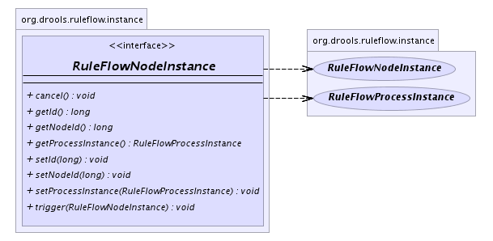

org.drools.ruleflow.instance
Interface RuleFlowNodeInstance
- All Known Implementing Classes:
- ActionNodeInstanceImpl, EndNodeInstanceImpl, MilestoneNodeInstanceImpl, RuleFlowGroupImpl, RuleFlowJoinInstanceImpl, RuleFlowNodeInstanceImpl, RuleFlowSequenceNodeInstanceImpl, RuleFlowSplitInstanceImpl, StartNodeInstanceImpl, SubFlowNodeInstanceImpl
public interface RuleFlowNodeInstance
Represents a node instance in a RuleFlow. This is the runtime counterpart
of a node, containing all runtime state. Node instance classes also
contain the logic on what to do when it is being triggered (start
executing) or completed (end of execution).
-
- 
setId
void setId(long id)
getId
long getId()
setNodeId
void setNodeId(long nodeId)
getNodeId
long getNodeId()
setProcessInstance
void setProcessInstance(RuleFlowProcessInstance processInstance)
getProcessInstance
RuleFlowProcessInstance getProcessInstance()
trigger
void trigger(RuleFlowNodeInstance from)
cancel
void cancel()